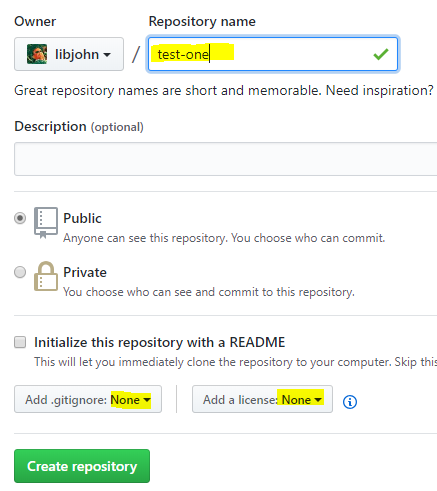
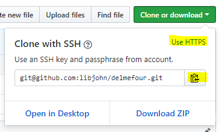

Add a repository name. Use the name test-one

Type ‘test-one’ and add a short description
Change “Add .gitignore” from None to R
Change “Add a license” from None to ** MIT License**
Click Create repository
GitHub will present a new page.
Click the green “Add a README” button
Make a top level heading with the word “#README”
See Markdown for more information on Markdown tagging
After a blank line type: This is my first GitHub repository.
Click the green Commit new file button
Congratulations. You’ve just created your first GitHub repository. Now you can see your repository – including the three files you just created.
Clone
Using RStudio, clone your repository. Cloning will pull down the whole repo to your local system – including the three files you just created.
Bring the repo down locally via RStudio
Copy GitHub repo URL to clipboard by clicking on the green Clone or Download button
The repo should be at a location like this. https://github.com/<<your-NetID>>/test-one
Click the Use SSH link, then the clipboard icon to copy the repository address. This will copy the git URL to the clipboard

Copy the repo URL
Launch RStudio and create a New Project…
From the RStudio menubar: File > New Project… > Version Control > Git
Paste the GitHub repo URL (from the step above) into the Repository URL: field in RStudio
Create Project
You may be prompted with a message which asks if you about the “authenticity of host”. I like to verify the IP number is correct; then the answer is yes.
Push: Edit and Commit
Continue in RStudio. This time you’ll make local changes by editing your local repository. After saving the changes you’ll add and commit the changes. Lastly, you will push your changes up to the remote repository.
Edit
In the Files Pane, Open the README.md file
In the Editor Pane, modify your README with Markdown
Make a Sub-heading with the word “Purpose”
i.e. ## Purpose
After a blank line type: This is my first Git repository. I'm going to push this file to GitHub via RStudio. Hello World.
Save the changes to this file
Commit & Push
In the Git pane:
Check each of the staged files
Click commit and provide a message: this is my first edit of a README and supporting files
Click the commit button to engage your commit process with the message, then close
Click the Push arrow, then close, then close the commit dialogue box
View your changes back at GitHub: https://github.com/<<your-ID>>/test-one
Pull
The next time you open your project in RStudio the first step you should take is to Pull from the GitHub repo. Then make your changes, then commit and push. If you forget to Pull you may have to resolve some conflicts. For best results, get into the habit of pulling before you make edits.